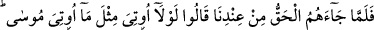
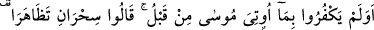
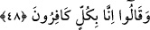
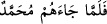
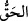
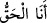
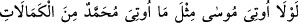

48. Fakat onlara tarafımızdan o hak (Peygamber) gelince: “Mûsâ’ya verilen
(mucizeler) gibi ona da verilmeli değil miydi?” dediler. Peki, daha önce Mûsâ’ya
verileni de inkâr etmemişler miydi? “Birbirini destekleyen iki sihir!” demişler ve
şunu söylemişlerdi: Doğrusu biz hiçbirine inanmıyoruz.
“Fakat onlara” yâni Mekke ehline ve müşrik (küffâr) Araplara “tarafımızdan”
emrimiz ve vahyimizle “o hak (Peygamber) gelince”:
“Hak” kelimesinden maksad Kur’an’dır. Zira Zuhruf suresinde “...Nihâyet onlara
Hak (Kur’an) ve onu açıklayan bir elçi geldi” (ez-Zuhruf, 43/29) buyrulmuştur.
Nitekim Keşfü’l-esrâr’da bu şekilde geçmiştir.
İbn Abbâs (r.a.) “hak” kelimesini, “
(Muhammed (s.a.) onlara gelince)”
şeklinde açıklamıştır.
Burada, Rasûlullah (s.a)’in Allah katına (indiyyet makamına) ulaştıktan ve Allah’ın
kendisini esmâ-i hüsnâsından “
(Hak)” ismiyle isimlendirmesini hak ettikten sonra
peygamber olarak gönderildiğine bir işâret vardır. Yine Peygamber (s.a.)’in nefsinden
fânî olmadaki kemâline ve Hak Teâlâ’nın hüviyetindeki bakâsına işâret vardır.
Hz. Peygamber (s.a.) “
(Ben Hak’ım)” diyebilir. Bu kelime Rasûlullah (s.a)’e
tâbî olan birinden çıkmışsa bunda bir beis yoktur. Bu, o kimsenin Rasûlullah (s.a)’in
kalb aynasının hizâsında iken nübüvvet velâyetinin nurlarının yansımasını (in’ıkâs)
kabul etmede kalp aynasının safâdaki kemâline işâret eder. Bu hakîkat suyunun kaynağı
Muhammed (s.a)’in kalbidir; bu kimsenin lisânı da, Peygamber (s.a)’e tâbî olmasından
dolayı bu sözün mazharı, yâni ortaya çıktığı yerdir. “Sizin için Allah’ın Rasûlü’nde
(s.a.) güzel bir örnek vardır.” (Ahzâb, 33/21) (et-Te’vîlâtü’n-Necmiyye)
Kureyşliler, sırf inadla ve mücâdele duygusuyla: “Mûsâ’ya verilen (mucizeler) gibi
ona da” yâni Muhammed’e de peyderpey değil de toptan bir defada “verilmeli değil
miydi?” dediler.”
Bazıları der ki: Onlar bu sözlerini, yahûdilerin öğretmesiyle söylemişlerdir.
Büyüklerden biri demiştir ki: Küfürleri, Peygamber (s.a)’in kemâlini görmeğe onlara
engel oldu. Aksi halde şöyle demeleri gerekirdi:
“
” yâni Mûsâ’ya da Muhammed’e verilen
kemâlât gibisi verilseydi yâ...”
“Peki,” Kur’ânı inkâr ettikleri gibi “daha önce Mûsâ’ya verilen” Tevrât’ı da “